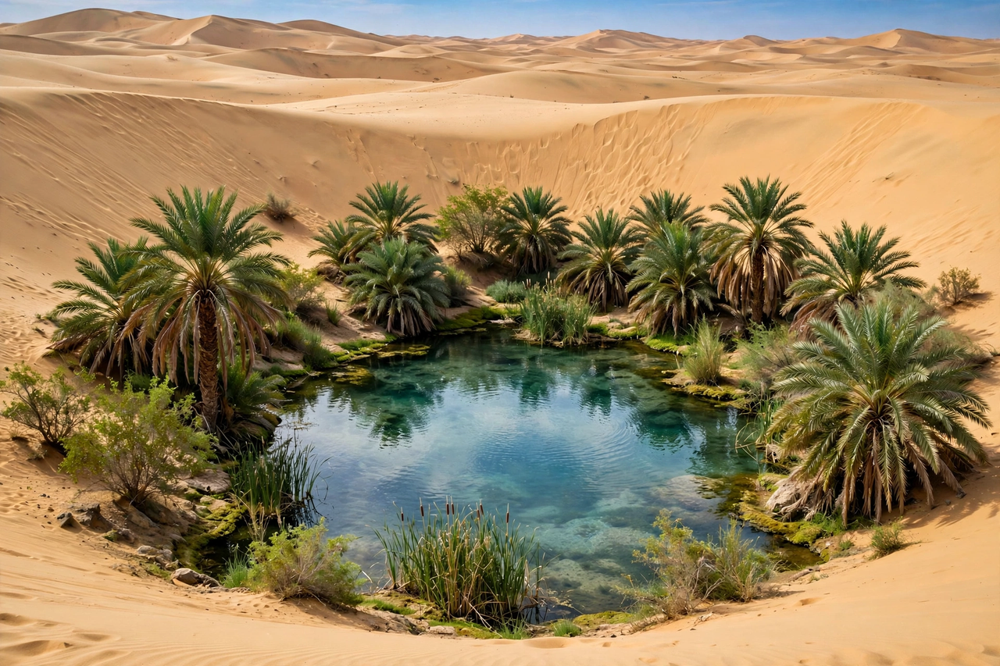

[Image placeholder: A Saharan oasis: date palms around a spring pool]An **oasis** is a fertile area in a desert or semi-desert environment, where water is available at or near the surface — from springs, wells or a high water table — supporting vegetation and often permanent settlement amid surrounding aridity. Oases made desert travel and trade possible: the caravan cities of the Sahara (Siwa, Timbuktu's hinterland), Arabia and the Silk Road (Dunhuang, Turpan) grew around them.
An oasis's greenery is frequently the classic three-storey system of date palms shading fruit trees over ground crops. Some oases are vast — Egypt's Nile valley and delta are sometimes called the greatest oasis of all — while others are a single spring like Huacachina in Peru, now a dune-ringed resort lagoon. Modern extraction of fossil groundwater for centre-pivot irrigation (as in Libya's Great Man-Made River and Saudi wheat projects) has created artificial oases while depleting aquifers.
Oases are biodiversity refuges and rest stops for migratory birds. Their management — communal water law, underground qanat/foggara channels, and date-palm horticulture — is ancient heritage; several oasis systems are UNESCO-listed. Falling water tables and salinisation threaten many.